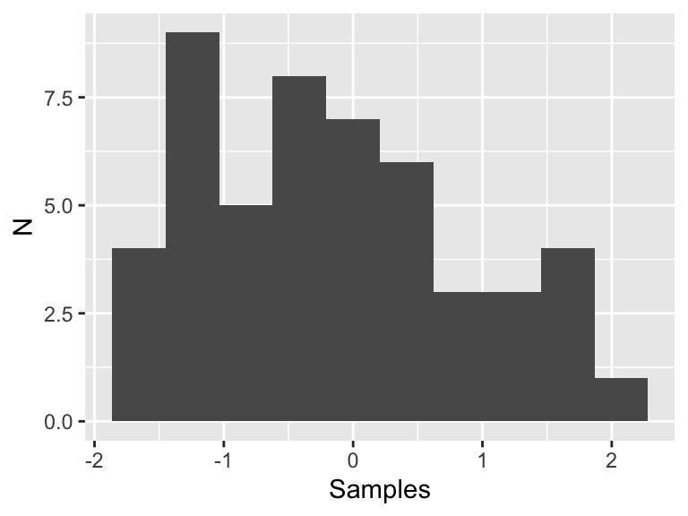
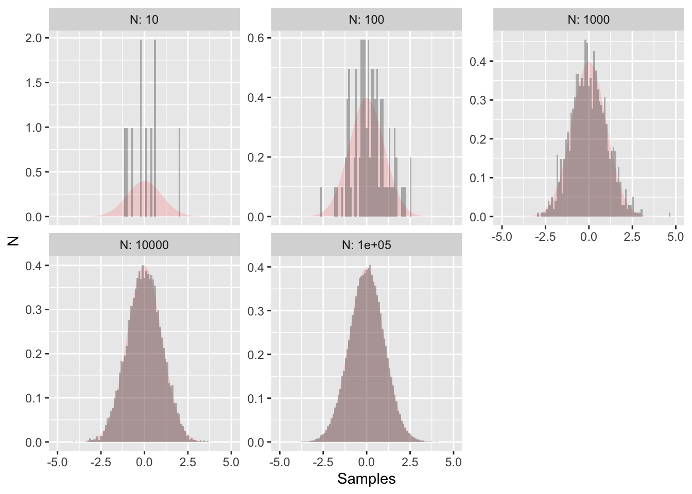

2.2 Statistical theory: Sampling distributions
To understand the process of sampling, let’s take a look at an example. Figure ?? is a histogram of 50 random samples of the standard normal distribution (\(\mu=0\) and \(\sigma = 1\)):
my_data <- tibble(samples = rnorm(50))
ggplot() +
geom_histogram(data = my_data, aes(x = samples),bins = 10) +
labs(x='Samples',
y='N')
This histogram looks like a normal distribution, but since we only have 50 samples that may not be enough data to adequately justify that conclusion, especially in a statistical sense. Now let’s see what happens if we increase the number of samples by factors of 10:

Figure ?? following plot also shows the true distribution shaded in red - clearly as the number of data points increases the more the random sample approaches the true distribution. This is the concept underlying statistical inference: process of drawing conclusions about the entire population based on a sample.
When we discuss likelihood and cost functions, we assume that the parameters follow some underlying probability distribution (such as normal, uniform, etc). However sometimes if the model is extremely nonlinear, the cost function ends up being non-linear. However by sampling the distribution we can characterize the distribution.